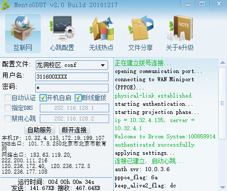
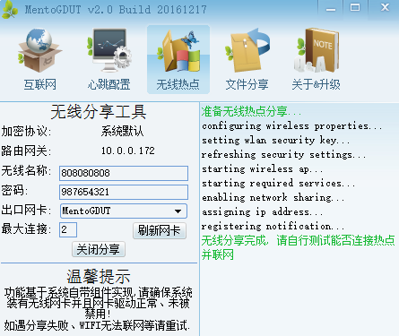
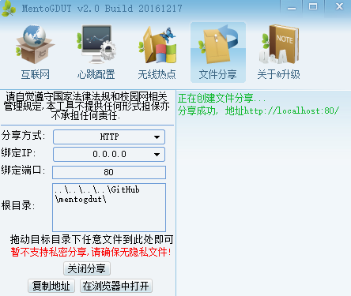

mentogdut
C/C++编写的可运行在Linux/Windows及其衍生系统的控制台小程序, 最小化内存占用并可灵活配置, 是整个第三方客户端的核心。
下载:
mentogdut_linux_windows_x64_20161217.zip
用法:(在命令行或终端中运行)
mentogdut -s svrip [-p port] [-f pppoe-flag] [-k keepalive2_flag] [-m checksum]
mentogdut -c conf
*小技巧: Windows系统中选中所在目录, 按住Shift并右键可快速打开命令行同时切换到相应目录
选项:
| -s,--server <ip> | 拓展数据认证服务器的IP地址 |
| [-p,--port <port>] | 认证服务器端口 [默认: 61440] |
| [-f,--pppoe_flag <flag>] | the pppoe flag [默认: 6a] |
| [-k,--keep_alive2_flag <flag>] | the keep alive2 flag [默认: dc] |
| [-m,--checksum <mode>] | 心跳使用的CRC校验方式 [默认: 0 自动] |
| [-c,--config <file>] | 可选的配置文件路径, 可避免每次指定参数 |
| [-h,--help] | 输出帮助 |
mentogdut路由器版本
专门提供给路由器使用的软件包, 可通过路由器管理界面的软件包安装或者执行命令opkg install mentogdut.ipk安装。安装后请务必勾选Apply PPPoE Patch否则一般无法成功拨号。
*提供的软件包均在斐讯K2(MT7620, pandorabox 16.10)测试过, 但仍无法保证兼容你的路由器, 有问题可以提交。
*路由器刷机有风险, 折腾需谨慎!尤其是没经验、没编程器的同学, 建议找人代刷!否则请参照教程一步步来。
mentogdut_2.0-2b_mipsel_24kec_dsp.ipk
mentogdut_2.0-2a_mipsel_24kec_dsp.ipk
mentogdut_2.0-1b_mipsel_24kec_dsp.ipk
MentoGDUT界面版本(仅适配Windows)
更新日志
mentogdut-gtk_x64_20161217.zip
mentogdut-gtk_x64_20161125.zip
客户端拨号界面

内建WIFI分享

局域网文件分享

参考资料
关于P版的PPPoE拨号问题
详细引用请移步英文版网页, 此处不再更新。
其它资源
| PandoraBox | 潘多拉路由器固件官方下载地址, 刷机教程基本可以在这里找到 |
| Npcap | 替代WinPcap的新型Windows网络数据包截获软件, Win10及以上系统建议使用 |
| drcom_2016.lua | 针对 Wireshark 的 drcom 协议分析插件 |
| pppoe_error.txt | 微软提供给开发者的PPPoE拨号错误代码及其含义 |
类似软件
gdut-drcom-dialer 这个比较diao, 宇工大狗联网拨号器, 如果MentoGDUT哪天挂了或者你不喜欢可以使用这个, 有专人更新。